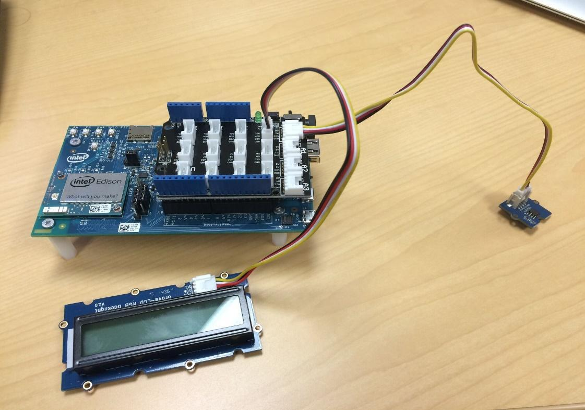

Exercise 1: Temperature Sensor and LCD
Connect the Temperature sensor (Analog) and LCD display (I2C) to your Intel Edison. Write code for NodeJS using the Intel XDK IoT Edition. Measure temperature in Celsius using upm library, convert it to Fahrenheit, then display it on the LCD.
-
Start a new project in the Intel XDK using a blank template.
If you have an Intel XDK project already open, click on the projects drop down menu in the upper left hand corner, then select New Project.
Choose Blank Template from the list of templates, then click Continue.

-
Connect Grove Temperature Sensor to analog pin A0 of the Grove Base Shield.
Connect Grove LCD display to one of the I2C pins.

-
Write your own code in main.js for temperature sensor and LCD display.
Below is an example of the final solution.
-
Build your application (1), upload it to Intel Edison (2), and run it (3).

{kind=link}
References
- https://github.com/intel-iot-devkit/upm/blob/master/examples/javascript/grovetemp.js
- http://www.seeedstudio.com/wiki/Grove-Temperature_Sensor
- https://github.com/intel-iot-devkit/upm/blob/master/examples/javascript/rgb-lcd.js
- http://www.seeedstudio.com/wiki/Grove-LCD_RGB_Backlight
You should now be seeing the temperature displayed on the LCD.